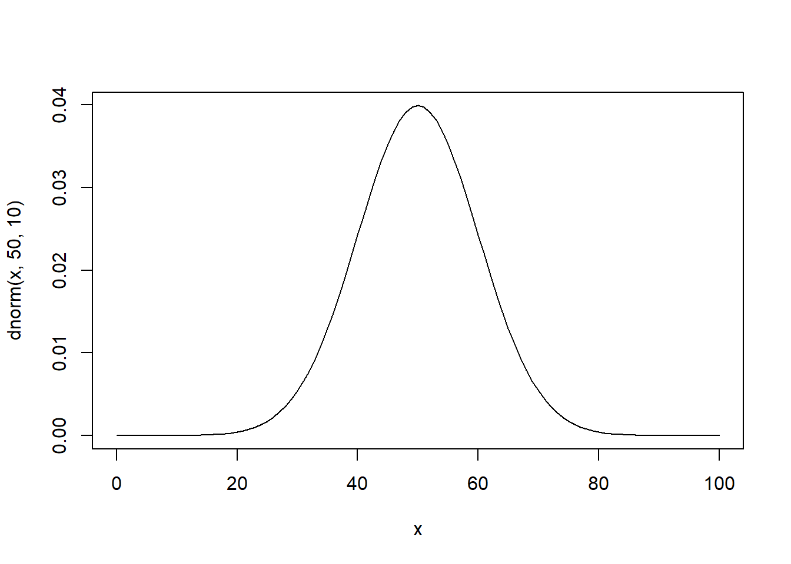
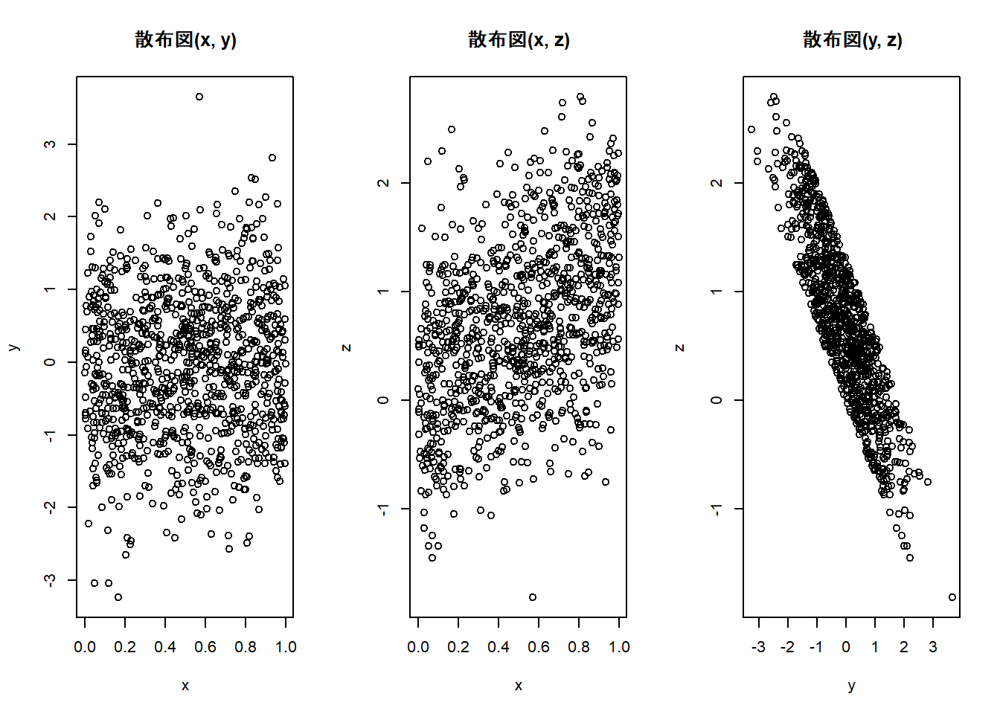

Week2 | Rによる自主勉強会
伊﨑 直志
2023年10月13日
準備
Loading Packages
library(tidyverse)
library(dplyr)
library(gridExtra)##
## 次のパッケージを付け加えます: 'gridExtra'## 以下のオブジェクトは 'package:dplyr' からマスクされています:
##
## combinewindowsFonts(family_sans = windowsFont("Noto Sans JP"))
par(family = "family_sans")
knitr::opts_chunk$set(echo = TRUE)第1章 回帰分析の目的
1.1. 相関と因果
相関関係 correlation：「Xが変化すればYも変化する」
因果関係 causality：「Xを変化させればYも変化する」
疑似相関 spurious correlation
「変数XとYに共通の第3の要因Zが存在することによってXとYに生じる見せかけの相関関係」
e.g. 個人所得の増加 →タバコへの支出増加、医療・健康への支出増加 ＝タバコと健康の疑似相関
- 時間的先行性: 原因となる現象が結果となる現象に時間的に先立って起きている。
- 共変関係（相関関係）: 原因となる現象が変動すると、結果となる現象も変動する。
- 他条件の同一性: 原因となる現象の双方に与える現象は存在しないか、その影響は統制されている。
1.2. 回帰と予測
一次関数 \(y=a+bx\) の形で表現 →最小二乗法（least squares estimation）（図1.1 →図1.6）
回帰直線、回帰式、回帰係数
回帰式の一方の変数に代入してもう一方の変数の値を計算、予測
ある変数Xの値をもとにして、他の変数Yの値を予測 ＝回帰分析
X：説明変数、Y：被説明変数⇒因果解釈ではなく、あくまで予測解釈！
回帰分析 →Xが与えられた時のYの値の予測
1.3. 自然科学のデータと社会科学のデータ
実験の難しさ（費用等コスト、倫理）
⇔自然科学：変数選択の制約・影響少、実験室実験可（変数統制） [従来的説明]
→現在、社会科学における実験多数：実験経済学等 or 自然実験…（後述）
第2章 統計の基礎知識
2.1. 母集団と標本
（有限集団全体）母集団－（抽出）標本
（確率分布）母集団－（観測値）標本 （←本書）
正規分布 normal distribution
正規分布\(N(平均, 分散=標準偏差^2)\)
正規分布（乱数）: rnorm(個数, 平均, 標準偏差)
rnorm(100, 50, 10) ## [1] 48.97817 43.93425 60.25414 59.16652 46.45024 30.69206 54.03010 45.87631
## [9] 46.23513 56.68140 45.51776 24.37026 32.41047 61.04866 62.13526 47.92508
## [17] 61.83455 56.63226 67.94924 52.21522 52.02671 47.50029 47.50297 57.97472
## [25] 43.07263 56.38267 53.55840 43.47210 53.46380 40.90859 50.00242 41.04127
## [33] 49.11294 43.44520 45.79911 25.14351 46.34499 50.25611 41.67403 53.82358
## [41] 47.85582 39.92241 33.40565 47.05851 46.21893 44.65666 38.42934 29.25364
## [49] 55.11681 52.99729 53.63037 51.93587 40.01354 54.56701 33.53669 51.87029
## [57] 49.97808 51.85389 49.14506 55.26962 38.49854 57.72824 40.73298 38.13048
## [65] 46.66638 63.16729 44.71253 45.20717 57.57986 52.36812 58.12848 51.80224
## [73] 48.34851 36.86330 45.51720 57.66193 43.79672 43.71919 33.94468 45.21149
## [81] 53.38953 39.48426 53.87045 53.06497 49.34529 28.94002 62.78476 46.85862
## [89] 61.56268 55.03101 35.82127 55.34104 69.37524 59.34838 42.85949 47.29655
## [97] 38.70392 39.32826 41.08471 51.56829curve(dnorm(x, 50, 10), 0, 100) #正規分布のグラフ描画
pnorm(60, 50, 10) #大きさ１の標本の値が60より小さくなる確率## [1] 0.8413447| 命令 | 説明 | （英略） |
|---|---|---|
rnorm(n, a, b) |
平均a, 標準偏差bの正規分布乱数をn個発生させる。 | random+norm |
dnorm(x, a, b) |
平均a, 標準偏差bの正規分布について, 密度関数の点xにおける値を計算する。 | density+norm |
pnorm(x, a, b) |
平均a, 標準偏差bの正規分布について, 分布関数の点xにおける値を計算する。 | probability+norm |
正規分布グラフ 描画関数
curve(dnorm(x, a, b), min, max) #curve(関数の式,
横軸の最小値, 横軸の最大値)
2.2. 無作為抽出
母集団から標本を抽出（random sampling）
rnorm(100, 50, 10)## [1] 71.41376 64.11257 38.55977 52.90169 46.11786 43.23486 57.88518 45.08334
## [9] 46.14636 56.37236 47.28790 42.74578 34.27598 27.36920 49.90532 67.66746
## [17] 52.81924 53.24047 55.10834 32.54312 40.36996 40.05091 60.33658 37.33701
## [25] 52.78607 55.36412 48.01606 38.97581 47.38922 58.58829 52.07294 48.42091
## [33] 50.12693 53.09609 65.17189 57.44066 51.43080 51.52168 31.26330 46.01824
## [41] 42.90457 45.87571 45.39183 34.04419 42.89970 55.07495 55.76149 51.48236
## [49] 45.32646 55.59614 59.31714 39.90791 43.81999 61.73672 54.57668 67.05127
## [57] 27.43237 24.27869 65.04737 35.23538 69.20205 46.58302 36.49937 66.07410
## [65] 63.95145 30.32251 47.96436 63.61920 44.70587 48.12464 77.41220 52.47291
## [73] 64.38899 67.13617 56.25996 60.22273 48.20823 63.78054 40.81273 44.70945
## [81] 57.13971 20.95433 41.82122 50.01747 45.97460 70.26887 42.17233 57.62593
## [89] 46.23986 53.12061 61.51662 53.38583 52.52903 44.14425 52.25829 43.36085
## [97] 48.73850 35.57968 46.07029 49.69833Z <- rnorm(100, 50, 10)
Z## [1] 38.36612 58.72469 42.51399 44.73775 30.95532 55.70393 46.82303 48.02923
## [9] 51.31464 51.75055 66.96499 43.59818 64.09627 46.17105 38.62148 46.56380
## [17] 49.75775 47.60061 58.52506 53.33864 59.03119 40.18054 52.74048 48.42961
## [25] 49.67034 49.19233 56.14319 44.17082 46.91367 46.68087 49.66707 48.44377
## [33] 59.35748 51.75354 51.87453 36.02774 44.04320 36.21155 65.00982 51.05147
## [41] 60.20507 41.43020 67.50651 37.30598 32.95581 56.09810 51.63217 50.16511
## [49] 63.96881 52.38061 23.77331 35.09371 45.92237 44.73911 68.24972 30.97440
## [57] 37.48465 38.31546 56.11508 51.80218 58.84162 71.06932 48.14007 65.18206
## [65] 42.79885 66.45754 50.28908 58.90271 63.88222 72.46541 51.23616 50.00315
## [73] 56.63036 48.88698 44.82574 47.62288 39.11208 47.46261 62.29582 55.94030
## [81] 46.90228 31.87096 62.37783 42.98411 65.58793 55.17704 61.63235 45.53444
## [89] 32.84945 56.61647 43.08356 62.00455 51.37253 38.98019 53.21287 51.98390
## [97] 61.45653 52.74515 44.92758 50.78216hist(Z) #ヒストグラム
Z[1:10] #最初の10個のデータを抜き出し## [1] 38.36612 58.72469 42.51399 44.73775 30.95532 55.70393 46.82303 48.02923
## [9] 51.31464 51.75055a <- c(5, 10, 100)
Z[a] #5番目,10番目,100番目の位置にある数字を抜き出し## [1] 30.95532 51.75055 50.78216Z[c(5, 10, 100)] #aを使わずに同上の操作## [1] 30.95532 51.75055 50.78216#特定の意味を持つ数値を抽出
max(Z) #最大値## [1] 72.46541which.max(Z) #最大値の位置## [1] 70min(Z) #最小値## [1] 23.77331which.min(Z) #最小値の位置## [1] 51mean(Z) #平均値## [1] 50.30996summary(Z) #基本統計量を一括表示## Min. 1st Qu. Median Mean 3rd Qu. Max.
## 23.77 44.60 50.08 50.31 56.62 72.471:10## [1] 1 2 3 4 5 6 7 8 9 10sample(1:10, 3) #無作為抽出、sample(範囲, 抽出個数)## [1] 1 10 5sample(Z, 5) #sample(標本, 抽出個数)## [1] 32.84945 46.56380 48.02923 38.31546 55.70393sample(Z, 5) #sample(標本, 抽出個数)## [1] 50.00315 62.37783 51.05147 51.23616 58.84162fruits <- c("ミカン", "バナナ", "リンゴ", "レモン", "モモ")
fruits## [1] "ミカン" "バナナ" "リンゴ" "レモン" "モモ"sample(fruits, 1) #fruitsから1個抽出## [1] "モモ"sample(fruits, 2) #fruitsから2個抽出## [1] "レモン" "モモ"sample(fruits, 1) #fruitsから1個抽出## [1] "ミカン"sample(fruits, 1) #fruitsから1個抽出## [1] "レモン"コイン投げ1
coin <- c("Head", "Tail")
#sample(coin, 5) #うまくいかない ∵非復元抽出になっている
sample(coin, 5, replace = TRUE) #復元抽出, replace=TRUE## [1] "Head" "Head" "Head" "Head" "Tail"2.3. 平均と大数の法則
- ①ベクトルrecのi番目の場所rec[i]に
- ②母集団N(50,10^2)から抜き出した大きさ100の標本の平均を格納する
mean(Z) #標本平均## [1] 50.30996mean(rnorm(100, 50, 10))## [1] 50.08412mean(rnorm(100, 50, 10)) #Z<-rnorm(100,50,10)## [1] 50.66951#より多い試行、抽出1000回、標本の大きさ100
S <- 1000
rec1 <- numeric(S)
for(i in 1:S){rec1[i]<-mean(rnorm(100, 50, 10))}
rec1## [1] 50.37167 50.60522 48.91633 50.52613 49.79491 50.31003 50.54238 49.11002
## [9] 49.93372 51.21445 49.67822 50.02292 50.77531 48.33440 50.26385 48.72466
## [17] 50.81277 50.62069 50.04250 49.66336 50.53770 51.24849 50.61281 50.98651
## [25] 51.68531 51.13333 49.85966 49.34683 48.49290 49.84256 50.77382 49.11192
## [33] 48.58688 50.93985 49.96026 51.46763 51.10220 50.08345 51.00847 49.98350
## [41] 50.92643 49.58004 51.47113 48.87036 49.34341 49.70669 51.04645 51.16184
## [49] 51.18433 51.15516 51.59748 51.19096 51.17267 49.17103 49.36584 48.88981
## [57] 51.75372 50.17095 49.38969 49.45554 50.63264 48.20412 49.20880 49.71112
## [65] 49.74107 49.63584 51.03237 49.50080 50.93138 50.89794 51.64610 51.43439
## [73] 50.91768 48.16429 50.74385 51.25498 51.36648 49.73313 48.87955 48.41496
## [81] 48.86592 49.77549 48.90659 49.17422 49.94342 50.15252 48.94295 48.35141
## [89] 50.05914 50.96628 49.80267 50.07715 49.67237 51.20822 49.94525 50.35627
## [97] 50.12442 50.12120 50.34444 48.12660 50.63164 49.16699 49.94257 50.08341
## [105] 51.41426 50.21724 49.49158 49.40653 49.11845 48.66458 49.33416 51.13651
## [113] 51.28989 50.84866 50.62364 50.01189 51.20734 51.62723 49.46875 50.09405
## [121] 50.44673 49.39871 49.31720 51.72410 51.13745 50.28591 50.22666 49.81363
## [129] 49.75731 49.35560 49.37899 47.83131 49.37806 50.09492 50.00841 50.93573
## [137] 50.65331 50.79375 50.17325 50.84887 49.69891 49.99530 49.38955 51.05271
## [145] 49.06298 50.17663 49.61365 49.44187 49.86566 49.52599 51.30836 50.37280
## [153] 52.63945 50.58938 50.54795 48.99334 47.82157 48.11860 51.82691 49.19823
## [161] 49.34622 51.49024 48.72074 48.24116 47.80889 50.46901 49.84292 50.86857
## [169] 48.83534 51.02131 49.83253 48.08419 48.70583 51.11848 49.74866 49.39374
## [177] 49.63548 51.47916 50.46393 50.11407 52.14818 49.10549 50.37102 50.83190
## [185] 50.67865 49.81461 49.61141 50.34269 48.24863 47.79921 52.28274 50.59055
## [193] 49.78934 48.60112 49.69214 51.30496 51.01834 49.32157 51.78603 48.19002
## [201] 49.42480 48.49468 48.48475 47.22557 49.86647 50.36385 46.49307 49.53970
## [209] 48.99850 50.00704 48.97733 50.03494 49.73719 48.61120 50.25570 50.38890
## [217] 48.97275 49.98275 50.18856 50.87897 49.58993 51.96821 49.40885 50.44939
## [225] 49.73333 51.38573 49.30307 50.15094 50.15695 50.69512 48.44560 49.25934
## [233] 49.62952 48.41975 49.66932 50.04213 50.54290 51.34995 49.78936 50.31507
## [241] 49.85781 48.78304 49.16646 50.21374 50.74975 51.63726 52.44895 52.58549
## [249] 50.64129 49.48871 51.34649 52.98439 50.17892 49.44818 48.43702 48.90931
## [257] 49.28571 49.67389 51.97880 51.10723 49.00025 50.27050 47.69308 48.90459
## [265] 50.43279 49.72416 50.41389 51.08990 47.76621 49.63668 49.76103 50.89372
## [273] 50.21133 51.35061 49.82872 49.52116 51.49809 49.37262 48.97461 49.21000
## [281] 50.18554 50.47302 50.50502 48.99307 51.00247 49.59207 50.94510 49.93815
## [289] 49.82249 50.25718 50.22660 49.30447 49.24740 51.18703 50.42992 50.64302
## [297] 49.27674 51.10054 49.40006 48.54866 48.54576 52.73394 49.94018 50.02508
## [305] 50.73372 48.35442 50.39064 49.21535 49.45140 51.19488 49.19029 49.66989
## [313] 50.30609 49.81209 49.59255 51.87893 47.78150 49.54116 50.71244 50.56722
## [321] 50.73999 51.07998 50.44915 49.80511 50.41889 51.53647 50.35916 50.59820
## [329] 50.04756 49.55967 50.48409 49.67958 50.63121 51.05106 52.50947 49.66916
## [337] 50.02364 49.62011 51.35503 50.14536 49.95141 49.43853 51.94275 48.54029
## [345] 48.58026 47.69273 49.06280 48.69080 49.66726 51.13230 49.83787 49.46966
## [353] 50.73319 50.80195 49.38904 51.47129 50.30642 49.50695 48.97733 48.93508
## [361] 48.17282 50.19160 49.47074 50.95154 49.37605 50.64589 49.44407 48.87754
## [369] 50.39540 50.54623 49.75855 49.80705 49.45532 49.64307 50.26449 49.28534
## [377] 51.66597 49.36481 50.65585 49.81021 49.81001 48.91233 48.76743 52.35711
## [385] 50.55407 49.94961 51.88198 48.86049 49.56316 52.00139 50.71148 51.03361
## [393] 49.90726 48.56441 49.94651 50.37695 50.25401 48.90468 50.60923 49.70995
## [401] 48.22236 49.40243 50.01318 49.25896 50.93299 49.19206 49.83536 50.42794
## [409] 49.54986 49.32471 52.50072 49.11049 50.40215 51.57050 49.51212 51.03137
## [417] 51.08304 50.32263 50.77374 50.26932 51.74973 48.40609 50.57616 51.52261
## [425] 48.44493 50.48946 51.99892 49.51490 51.12474 47.98460 50.59490 50.10991
## [433] 50.82286 49.59272 51.24613 49.62771 49.93127 49.39292 49.06319 49.90928
## [441] 48.60381 49.25079 50.33933 49.51652 49.82565 50.32326 50.62990 50.83130
## [449] 50.37433 51.53668 51.59045 50.99035 48.93111 50.23883 50.37706 51.82552
## [457] 49.23176 50.00844 51.50955 48.89297 48.22968 48.88306 50.48073 50.61524
## [465] 49.09284 51.96289 50.47627 48.74874 49.94185 50.79925 50.79052 51.19149
## [473] 51.49533 50.55061 50.24605 51.88498 48.51083 50.93978 48.79540 48.09543
## [481] 51.24421 50.92458 49.96235 50.52433 50.16988 49.93386 50.03453 50.59498
## [489] 50.51537 50.88033 49.65062 51.41360 49.53457 49.12372 51.83990 49.49628
## [497] 50.46323 51.06283 50.53635 49.60951 49.20706 49.66276 52.55098 49.05537
## [505] 50.49636 49.72204 50.34378 49.78442 50.18930 51.62079 50.24132 48.53256
## [513] 49.78781 51.86910 49.80323 49.60731 49.69852 49.98584 47.81489 50.55675
## [521] 49.05968 50.94082 49.39905 51.96669 50.26903 49.37976 50.09674 51.31423
## [529] 50.79040 51.56422 49.37016 49.49102 50.56575 49.40365 50.61129 49.14370
## [537] 47.94089 49.84849 48.63438 49.49438 48.91961 50.46599 50.76310 49.44602
## [545] 48.97245 48.51048 49.62867 51.14537 51.35743 49.61764 51.91664 49.74667
## [553] 50.22192 51.98093 49.73023 49.34751 49.41162 48.95920 48.78085 52.17980
## [561] 50.32939 48.67231 50.82217 49.32571 50.87792 48.70949 50.31921 50.27143
## [569] 50.97196 50.28433 48.39586 50.41406 51.43497 48.28215 50.78825 47.68257
## [577] 50.76023 50.79052 50.96648 51.29963 49.81230 49.50365 49.99345 49.94291
## [585] 51.65389 51.10508 49.60798 50.32182 50.38608 48.20552 50.24247 49.76969
## [593] 51.14220 48.32728 50.85578 49.82418 51.31218 49.82352 49.15551 50.74756
## [601] 51.00080 50.63255 52.07652 49.44181 50.31305 50.30952 50.95785 50.42033
## [609] 50.13000 50.74371 48.24620 49.80860 49.10726 51.76879 49.21876 50.05360
## [617] 49.86178 49.40900 49.41523 50.20543 51.22765 49.08397 50.99150 49.36825
## [625] 49.90271 52.09689 51.04765 50.09021 48.91595 49.83417 51.03206 50.09354
## [633] 49.86339 48.96717 49.79645 50.63907 51.83698 49.85172 50.04998 52.07964
## [641] 50.58059 47.82636 50.28663 47.75820 51.96381 49.82388 50.15393 51.53371
## [649] 49.71729 50.31214 51.43244 49.79512 50.25539 49.04320 51.99692 50.22923
## [657] 48.59712 50.50004 50.02139 49.79254 50.92422 51.31222 51.38560 48.57611
## [665] 50.06263 49.92119 50.87910 50.55785 49.80008 50.73292 51.27897 49.51038
## [673] 50.05875 49.84169 50.38670 50.77089 50.92452 49.41405 50.57173 50.73059
## [681] 50.00260 49.35938 49.80088 49.40656 48.60775 49.47832 48.95834 49.81561
## [689] 51.12974 51.73292 51.18365 50.89188 49.58474 49.53349 50.29685 51.28459
## [697] 50.63886 50.30348 49.95949 49.54528 50.90346 49.00301 50.39435 50.58137
## [705] 51.18178 50.85971 50.03307 51.44515 49.38340 49.20466 47.83707 48.83765
## [713] 50.17373 47.48569 51.12045 49.54200 48.67256 50.83593 48.16829 48.72639
## [721] 51.29158 52.50549 50.00042 50.93545 48.79947 49.71861 50.92733 49.69098
## [729] 49.61584 49.12909 49.71914 49.53695 49.07726 50.08800 50.09562 49.79324
## [737] 52.40852 48.89544 51.43760 49.96975 49.49715 50.11816 49.11335 50.36210
## [745] 49.12948 50.18416 51.36362 49.80736 48.72691 47.48387 50.27887 50.58331
## [753] 49.27186 48.70509 50.60690 50.88240 48.85646 50.61375 51.40714 48.75223
## [761] 49.67809 48.91007 48.80575 49.91993 49.43241 48.77993 49.33088 50.71980
## [769] 49.96447 48.50690 50.38882 48.72789 47.85114 50.62419 51.18280 51.10629
## [777] 51.62239 50.38873 50.50516 50.49842 48.33986 50.52040 50.20808 49.31139
## [785] 50.71566 50.31229 48.76794 50.05394 48.73923 48.84546 50.31512 51.02983
## [793] 50.31722 50.77185 50.68732 48.87066 51.34556 50.03190 51.22408 49.90818
## [801] 50.04066 50.79034 48.72047 50.19941 51.19150 50.09309 51.81580 49.44712
## [809] 51.01456 51.08744 48.84279 51.29030 49.63511 49.82905 51.50586 51.42364
## [817] 49.59114 50.26208 50.86484 49.14196 49.08354 48.72554 50.54770 51.96155
## [825] 50.98976 50.72224 50.14809 50.27570 49.49552 51.43374 50.01597 51.89844
## [833] 50.34839 48.53354 48.59585 47.91642 49.45638 49.79613 50.14382 50.63798
## [841] 50.38797 50.94097 49.49139 49.93209 49.55914 49.70363 49.83986 50.88064
## [849] 49.64541 50.88818 48.71969 49.14342 48.47768 48.99396 50.37420 48.18166
## [857] 48.88928 50.61108 50.26703 48.61368 50.29024 51.48223 50.96906 50.19145
## [865] 50.77185 48.93699 47.98322 50.06579 48.04875 50.22980 49.65947 50.11801
## [873] 50.18293 48.95132 51.84014 50.35734 49.99099 48.83550 50.78418 51.93335
## [881] 51.11269 50.20937 49.71413 48.75801 48.07347 49.12693 50.19402 49.08919
## [889] 50.23068 51.06462 49.19297 48.88005 49.51349 51.16688 49.73000 48.29272
## [897] 48.78475 49.89765 49.27181 50.31115 50.48338 51.38748 50.67924 51.78054
## [905] 49.52479 49.42043 50.88133 50.68782 50.63939 49.82445 49.68284 49.59693
## [913] 48.90763 49.53121 49.63450 49.80621 47.89144 51.43286 51.33046 49.66043
## [921] 50.32076 48.36789 51.21232 52.09681 49.68897 50.02675 50.68836 50.22095
## [929] 50.06809 50.01570 48.46230 48.94806 48.68786 50.42437 49.78555 49.98429
## [937] 50.75455 50.75594 52.58957 51.36893 50.07475 50.87555 51.13372 50.39029
## [945] 49.75175 50.86330 49.24157 49.65321 50.91700 48.07780 50.50041 49.94851
## [953] 49.89842 50.74033 50.53997 50.49918 51.18253 49.52572 51.48042 49.00452
## [961] 51.41257 51.39177 49.55845 51.90288 51.08195 51.45288 48.67127 49.67087
## [969] 50.90554 52.07720 48.70352 49.59444 50.52316 49.04822 48.99592 51.71305
## [977] 48.02499 51.18519 49.37975 50.38810 50.48838 49.49280 49.25621 49.00159
## [985] 50.56640 50.08729 51.41211 49.24419 50.32724 49.75072 50.75559 48.50734
## [993] 50.16963 50.45235 49.64963 51.58508 49.54266 50.03783 47.97238 49.68690hist(rec1, main = "n = 100") #main = "n = 100", ラベル
summary(rec1)## Min. 1st Qu. Median Mean 3rd Qu. Max.
## 46.49 49.39 50.04 50.05 50.77 52.98【大数の法則】 母集団から無作為に抜き出された標本の平均値は、標本の大きさが大きいほど、母集団平均に近い値をとる。
サイコロ：母集団平均3.5
\(1*1/6+2*1/6+3*1/6+4*1/6+5*1/6+6*1/6=3.5\)
⇒大数の法則をスクリプトで確認
sample(1:6, 10, replace = TRUE) #サイコロを10回振る試行## [1] 4 3 6 4 5 5 6 2 1 4mean(sample(1:6, 1000, replace = TRUE)) #サイコロを1000回振った結果の目の平均値, 3.5に近似## [1] 3.519#サイコロ10回の標本平均×1000
S <- 1000
rec2 <- numeric(S)
for(i in 1:S){rec2[i] <- mean(sample(1:6, 10, replace = TRUE))} #サイコロ10回の標本平均×1000
summary(rec2)## Min. 1st Qu. Median Mean 3rd Qu. Max.
## 1.600 3.100 3.500 3.509 3.900 4.900#サイコロ1000回の標本平均×1000
S <- 1000
rec3 <- numeric(S)
for(i in 1:S){rec3[i]<-mean(sample(1:6, 1000,replace=TRUE))} #サイコロ1000回の標本平均×1000
summary(rec3)## Min. 1st Qu. Median Mean 3rd Qu. Max.
## 3.352 3.465 3.505 3.501 3.537 3.655#サイコロ10000回の標本平均×1000
S <- 1000
rec4 <- numeric(S)
for(i in 1:S){rec4[i] <- mean(sample(1:6, 10000, replace = TRUE))} #サイコロ1000回の標本平均×10000
summary(rec4)## Min. 1st Qu. Median Mean 3rd Qu. Max.
## 3.445 3.489 3.500 3.500 3.512 3.5482.4. 分散と標準偏差
| 命令 | 説明 |
|---|---|
var() |
分散 |
sd() |
標準偏差 |
標本平均 →標本のちらばり
分散 variance 標本が平均値を中心にどれだけ散らばっているかを表す指標
標準偏差 standard deviaton 分散の平方根、標本が平均値を中心にどれだけ散らばっているかを表す指標（同上）
分散は、計算過程において２乗しているので観測データの単位と異なります。例えば観測データの単位がg（グラム）である場合、分散の単位はg2になります。そこで、分散の平方根である標準偏差を求めることによって、観測データとの単位を揃えることが出来ます。そうすることで、分散よりも扱いやすい値となります。
#母集団N(50, 10^2)から大きさ1000の標本を無作為に抽出
x <- rnorm(1000, 50, 10)
var(x) #分散## [1] 102.9683sd(x) #標準偏差 #10に近似## [1] 10.14733#分散・標準偏差における大数の法則
#n = 1000
S <- 1000; n <- 1000
rec <- numeric(S)
for(i in 1:S){rec[i]<-sd(rnorm(n, 50, 10))}
summary(rec) #標準偏差10に近似## Min. 1st Qu. Median Mean 3rd Qu. Max.
## 9.325 9.841 9.998 10.000 10.158 10.754#より大きいサイズで確認
#n = 10000
S <- 10000; n <- 10000
rec <- numeric(S)
for(i in 1:S){rec[i]<-sd(rnorm(n, 50, 10))}
summary(rec) #より10に近似＝大数の法則## Min. 1st Qu. Median Mean 3rd Qu. Max.
## 9.745 9.952 9.999 10.000 10.047 10.2722.5. 相関係数と共分散
| 命令 | 説明 |
|---|---|
plot() |
散布図 |
cor() |
相関係数 |
cov() |
共分散 |
x <- rnorm(100, 50, 10)
y <- rnorm(100, 50, 10)
plot(x, y, main = "散布図(x, y)") #x,yの散布図
#xと関係のあるzを追加
z <- (x+y)/2
plot(x, z, main = "散布図(x,z)") #x,zの散布図
共分散: 2変数の関係の強さを表す指標の一つ。
〈手順〉
- それぞれの変数の平均値を求める
- それぞれの変数の偏差（数値 － 平均値）を求める
- 偏差の積の平均値（＝共分散）を計算する
ただし、データの単位の影響を受けるので値の大きさで単純に比較できない（データスケールに応じて変 化してしまい、共分散の数値だけを見て関係性を判断することは難しい）
⇒ 正規化・標準化の必要＝相関係数
相関係数: 2つの確率変数間の線形関係の強さをはかる指標、
-1以上+1以下の値を取り、1に近づくほど正の相関、-1に近づくほど負の相関
x <- rnorm(100, 50, 10)
y <- rnorm(100, 50, 10)
plot(x, y, main = "散布図(x, y)") #x, yの散布図
z <- (x+y)/2 #xと関係のあるzを追加
plot(x, z, main = "散布図(x,z)") #x, zの散布図
相関係数
cor(x, y)## [1] -0.03254469cor(x, z)## [1] 0.6163207共分散
cov(x, y)## [1] -3.309957cov(x, z)## [1] 39.77781おまけ
x <- rnorm(100, 50, 10)
y <- rnorm(100, 50, 10)
par(family="family_sans")
plot(x, y, main = "散布図(x, y)") #x, yの散布図
z <- (x+y)/2 #xと関係のあるzを追加
plot(x, z, main = "散布図(x, z)") #x,zの散布図
library(ggplot2)
ggplot() +
geom_point(aes(x, y))+
labs(title="散布図(x, y)") +
theme_grey(base_family = "family_sans") +
theme(plot.title = element_text(hjust = 0.5))
ggplot() +
geom_point(aes(x, z)) +
labs(title="散布図(x, z)") +
theme_grey(base_family = "family_sans") +
theme(plot.title = element_text(hjust = 0.5))
ggplot() +
geom_point(aes(x, y)) +
labs(title="散布図(x, y)") +
theme_bw(base_family = "family_sans") +
theme(plot.title = element_text(hjust = 0.5))
ggplot() +
geom_point(aes(x, z)) +
labs(title = "散布図(x, z)") +
theme_bw(base_family = "family_sans") +
theme(plot.title = element_text(hjust = 0.5))練習問題
問題2.1.
#2.1.1.
runif(100)## [1] 0.870467248 0.320905020 0.368377836 0.908659632 0.156700153 0.678065341
## [7] 0.832348326 0.499877897 0.525165201 0.489673005 0.017304479 0.434282620
## [13] 0.633373450 0.141388219 0.687817867 0.614361075 0.522583735 0.226950705
## [19] 0.656154275 0.040378154 0.358389297 0.063026112 0.860080392 0.131482475
## [25] 0.852200336 0.601717510 0.221579934 0.030145326 0.319289330 0.830596616
## [31] 0.849675049 0.083603377 0.288897248 0.539244325 0.858486458 0.106963066
## [37] 0.419518205 0.254223291 0.153741742 0.002560092 0.778761114 0.639230250
## [43] 0.754491800 0.583012840 0.394944810 0.409993285 0.966495112 0.415549046
## [49] 0.302237936 0.618938274 0.822324206 0.230186827 0.367489898 0.778568742
## [55] 0.756022107 0.218764562 0.910884393 0.283869282 0.473192540 0.410512330
## [61] 0.079357698 0.066856329 0.737765411 0.487493481 0.225213939 0.778961157
## [67] 0.800100096 0.500709866 0.399323954 0.624333792 0.084849063 0.106734606
## [73] 0.043544831 0.143897630 0.242189944 0.195563031 0.810846900 0.810713905
## [79] 0.577851750 0.323075437 0.481991233 0.329736333 0.719098753 0.486155106
## [85] 0.852522449 0.996368775 0.059697641 0.985010061 0.436146159 0.096074247
## [91] 0.710568883 0.761970699 0.968657000 0.701481233 0.423767200 0.734909545
## [97] 0.275575588 0.823956891 0.554436206 0.569433391#2.1.2.
P <- runif(100)
mean(P) #平均## [1] 0.5005531var(P) #分散## [1] 0.08408907sd(P) #標準偏差## [1] 0.2899812#2.1.3.
S <- 1000; n = 100
recP <- numeric(S)
for(i in 1:S){recP[i] <- mean(P)}
summary(recP)## Min. 1st Qu. Median Mean 3rd Qu. Max.
## 0.5006 0.5006 0.5006 0.5006 0.5006 0.5006#Re
x <- runif(100)
#2.1.2.
mean(x)## [1] 0.5185756var(x)## [1] 0.08702617sd(x)## [1] 0.295002#2.1.3.
S <- 1000; n <- 1000
rec <- numeric(S)
for(i in 1:S){rec[i] <- mean(runif(n))}
summary(rec)## Min. 1st Qu. Median Mean 3rd Qu. Max.
## 0.4687 0.4943 0.5002 0.5004 0.5067 0.5311問題2.2.
x <- runif(100)
y <- rnorm(100, 0, 1)
z <- 1.3*x-0.7*y
#2.2.1.
plot(x, y, main = "散布図(x, y)")
plot(x, z, main = "散布図(x, z)")
plot(y, z, main = "散布図(y, z)")
cor(x, y)## [1] 0.00761883cor(x, z)## [1] 0.4354526cor(y, z)## [1] -0.8968679#2.2.2.
x <- runif(n)
y <- rnorm(n, 0, 1)
z <- 1.3*x-0.7*y
n = 10000
cor(x, y)## [1] 0.02459814cor(x, z)## [1] 0.4616841cor(y, z)## [1] -0.8754195par(mfrow = c(1,3))
plot(x, y, main = "散布図(x, y)")
plot(x, z, main = "散布図(x, z)")
plot(y, z, main = "散布図(y, z)")
w <- cbind(x, y, z)
cor(w)## x y z
## x 1.00000000 0.02459814 0.4616841
## y 0.02459814 1.00000000 -0.8754195
## z 0.46168407 -0.87541946 1.0000000#おまけ
library(ggplot2)
x <- runif(100)
y <- rnorm(100, 0, 1)
z <- 1.3*x-0.7*y
g1 <- ggplot() +
geom_point(aes(x, y)) +
labs(title = "散布図(x, y)") +
theme_bw(base_family = "family_sans") +
theme(plot.title = element_text(hjust = 0.5))
g2 <- ggplot() +
geom_point(aes(x, z)) +
labs(title = "散布図(x, z)") +
theme_bw(base_family = "family_sans") +
theme(plot.title = element_text(hjust = 0.5))
g3 <- ggplot() +
geom_point(aes(y, z)) +
labs(title = "散布図(y, z)") +
theme_bw(base_family = "family_sans") +
theme(plot.title = element_text(hjust = 0.5))
grid.arrange(g1, g2, g3, ncol = 3)
筒井淳也『数字のセンスを磨く データの読み方・活かし方』（2023年, 光文社.）の第4章を参照のこと。↩︎